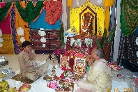
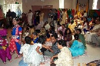
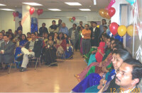
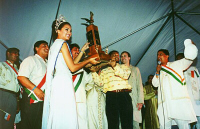
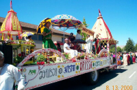

Sept.
14th, 2002 (San Jose, CA) -- The Bay
Area Oriyas celebrated Ganesh Puja on
Saturday, Sept 14th. About 300 members of our
growing community had gathered on a sunny and
bright day at the Sherman Oaks Community
Center in San Jose for the auspicious
occasion. Puja was conducted by our Oriya
Purohit, Shri Debendra Das Sharma. The Puja
culminated in a Pushpanjali offering to the
Goddess followed by Prasad. Soon afterwards
everybody was treated with Priti Bhoj catered
from a local vegetarian restaurant.
Then came the fun
filled entertainment programe. It started
with the ‘Jagannath Swami’ Odissi
dance, choreographed by Shibani. It was a
display of good team work of budding and
seasoned Odissi dancers among the kids. A
special thanks to Shibani and Suparna.
Twisampati wanted to
wrap all the kid’s events with a common
theme, a drama based on the story of a
typical silicon valley couple. That is where
the adult’s wanted to display some of
their lost and forgotten talents. Monoj and
Gayatri Joshi were the ideal couple to fit
this slot and I had no other option but to do
the supporting act with my partner Sushant
Mohanty and the kids. The Music Teacher
Subhas taught us to smile even living in the
war ravaged Silicon Valley ‘Kanchi
Abhijan’, directed by Anasuya Lall
Mohanty with support from Mamta, Mona, Pupa,
Seema, Vandanas (Nayak and Samantaray) and
Japani could have been a strong contender for
Oscar nominations for costume design.
‘Ganesh
GitiNatya’ directed by Kuku Das and her
team (Mita Tripathy, Sasmita, Rekha, Kanti,
Gayatri and Mita Maharana) certainly exceeded
the expectations of the crowd. The little
Ganesh won the heart of everyone.
Twisampati, Mallika, Chitra, Amlan,
Sudam, Sadashiv and Manoj have
set the expectations of the people high. It
needs a lot of sweating to organize such an
event. We have always felt that
‘Kid’s are the best teachers’.
So we have to wait till the next Saraswati Puja, for our learning is incomplete and
journey unfinished. A real memorable event.

January 1, 2001 (San Jose, CA)
-- It was a cold December evening. But the
warm hearted Odiyas of the Silicon Valley
were ready to greet the New Millenium. So
they rallied for the Annual New Year's Party
with vim, vigour and vitality.
The party started at the
Moorpark Community Center at 7:30 P.M., with
evening snacks and samosas. The Hall was well
decorated and well equipped. There was a
release of musical CD "Bhuli Hue
Nahin" in memory of Late Mrs. Uttara
Das, a prolific poet and wife of Mr Binay
Das. Bui Nani and Mini Nani fondly reminisced
their previous acquaintance with Mrs. Das and
offered tributes to her departed soul. This
function was followed by a Quiz &
entertainment show, deftly conducted by
Mr.Manoj Panda. The audience burnt ample grey
cells to answer his posers related to Odisha.
Everybody thoroughly enjoyed the show. Now
people were getting restive for the Dinner.
Food was catered from a local Indian
Restaurant and everybody had a sumptuous
treat. But the real bash was yet to begin.
Once the foot-tapping music came on the air,
everybody started on their own pulsating
dance styles. The younger ones were
particularly at their gyrating best, giving
the grown-ups a lesson or two on Bhangra !!
In between, there was a brief celebration to
toast the rollover to the new year. And then
the revelry continued till the wee hours.
Everybody had a gala time in the Party. The
organisers had left no stones unturned to
make it a memorable one for all. The new year
couldn't have begun with a better note. < more photo>

August
6, 2000 (Union City, CA) -- India
Festival parade with the Orissa float proudly
marching to the amazement of everyone! It won
two awards - The Best Overall Float and The
Best Decorated Float. The trophy and the
plaque thrilled every proud Oriya present at
the India Festival. Miss Universe, Lara Dutta
handed the trophy with words like "that
was the most beautiful float..". She was
the grand marshall who lead the parade and
was also a part of the judging panel for the
best float.

August
13, 2000 (Fremont, CA) -- The Orissa
float won the first prize at the FIA-sponsored Indian Independence day parade
held at Fremont, today, the 13th. August.
Those of you who saw it realized that this
was a more elaborate parade than last week,
with more than 40 vehicles and 12 floats. Our
competition was tough, what with the Bhangra
dancers and the Punjab float, the
well-decorated Gujarat and Rajasthan floats.
The well-known film actor Devanand and
actress Moon Moon Sen lead the parade.